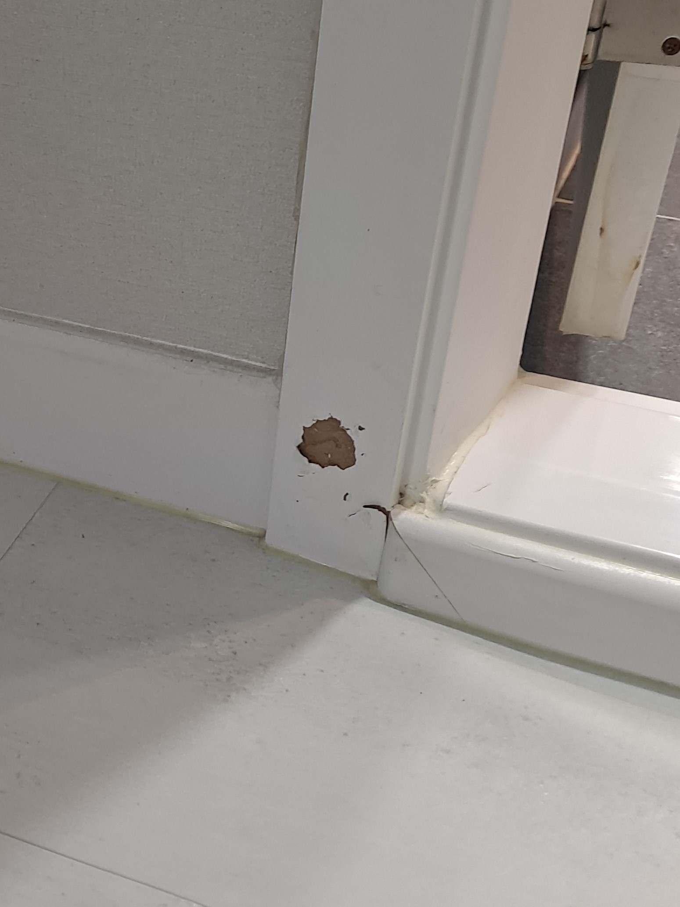
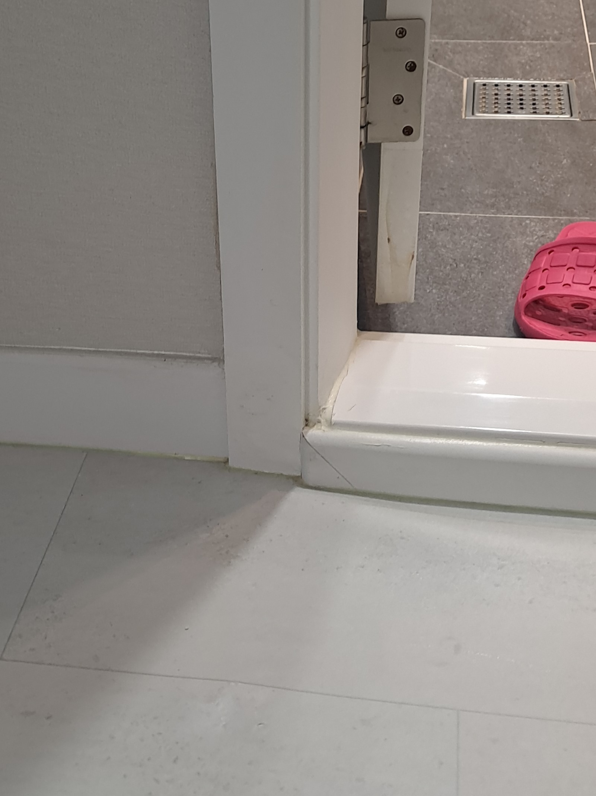

기존 문틀 유지
멀쩡한 문틀과 필름은 그대로 두고 찍히고 찢어진 부분만 복원합니다.
문틀 하단이 강하게 찍히면서 흰색 인테리어 필름이 찢어지고 들떠 바탕재가 드러난 현장입니다. 필름 업체에 문의했지만 기존 색상을 맞추려면 문틀 전체를 시공해야 해 비용과 공사 범위가 커졌고, 전세집 퇴거 전 원상복구를 위해 부분복원을 알아보다 클린멋쟁이에 연락해주셨습니다.

문틀 필름이 찢어질 정도의 충격은 안쪽 바탕재도 함께 파손되는 경우가 많습니다. 들뜬 필름만 붙이면 표면이 울거나 손상 흔적이 남기 때문에 내부를 단단하게 보강하고 문틀의 직선과 모서리를 복원한 뒤 색상과 표면 질감을 맞춰야 합니다.
문틀 한 곳의 국소 손상이라면 같은 필름을 새로 구해 전체를 감싸기보다 기존 마감은 유지하고 찍힌 부분만 복원할 수 있습니다.
멀쩡한 문틀과 필름은 그대로 두고 찍히고 찢어진 부분만 복원합니다.
색상을 맞추기 위한 문틀 전체 필름 시공보다 합리적인 방법을 검토할 수 있습니다.
필름 전체 철거와 재시공 없이 비교적 짧은 시간 안에 마무리할 수 있습니다.
이사나 퇴거를 앞두고 생긴 문틀 찍힘과 필름 파손을 깔끔하게 정리합니다.
들뜬 부분을 무리하게 덮지 않고 손상된 바탕을 안정적으로 보강한 뒤 문틀의 직선과 모서리, 색상과 질감을 순서대로 맞춥니다.
바닥과 주변을 보호하고 필름 들뜸, 바탕재 파손 범위를 확인합니다.
찢어지고 약해진 가장자리를 정리해 복원할 바탕을 만듭니다.
파인 바탕재를 단단하게 보강하고 문틀 높이에 맞춰 형태를 잡습니다.
문틀의 직선과 모서리가 주변과 자연스럽게 이어지도록 다듬습니다.
기존 흰색 필름의 톤과 표면 느낌에 맞춰 복원 흔적을 줄입니다.
드러난 바탕재를 보강하고 문틀 하단의 모서리와 표면을 다시 만든 뒤 기존 필름 색상과 어울리도록 마감했습니다.

“전체 필름 없이도 이렇게 깔끔하게 시공이 되네요~ 전세집인데 이사 갈 때도 문제가 없겠어요^^”
| 비교 항목 | 부분복원 | 전체 필름 시공 |
|---|---|---|
| 비용 | 손상 부위 중심으로 비교적 부담이 적음 | 전체 자재와 철거·시공 비용이 발생 |
| 작업시간 | 현장 상태에 따라 비교적 짧음 | 기존 필름 제거와 전체 시공 시간이 필요 |
| 생활 불편 | 작업 범위가 작아 불편을 줄일 수 있음 | 문틀 전체와 주변 공간의 작업 범위가 넓음 |
| 완성도 | 기존 색상과 질감에 맞춰 손상 부위를 연결 | 문틀 전체를 새 필름으로 통일 |
| 효과 | 국소 찍힘을 보강하고 기존 마감을 유지 | 노후·들뜸이 넓은 필름을 전체 교체 |
문틀 전체와 손상 부위를 함께 보내주시면 필름 색상과 파손 상태를 확인해 상담합니다.